§一 传票
嘉靖七年（1528）三月，徽州府歙县，呈坎村的罗显进了一趟村南的杨干院。杨干院是一座寺，罗家的祖坟就在这座寺的院子里。
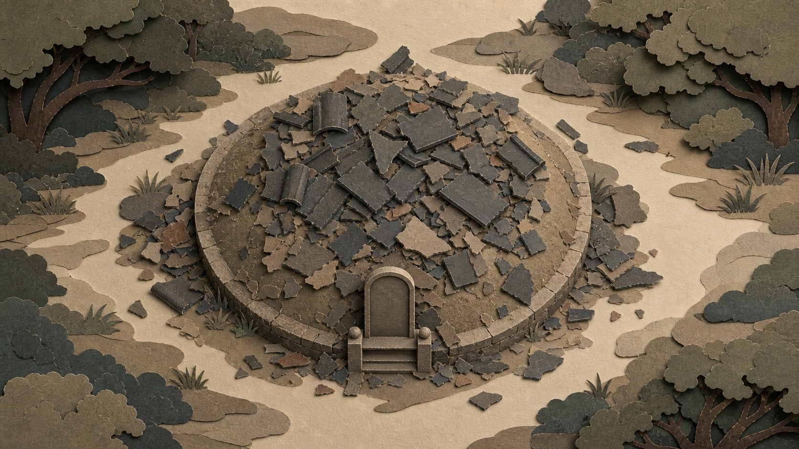
祖坟被一大堆碎砖烂瓦压在底下。去年冬天寺里重修佛殿，建筑垃圾就近往坟头上一倒，压了整整一冬。这坟到罗显这辈，已经六百多年了。
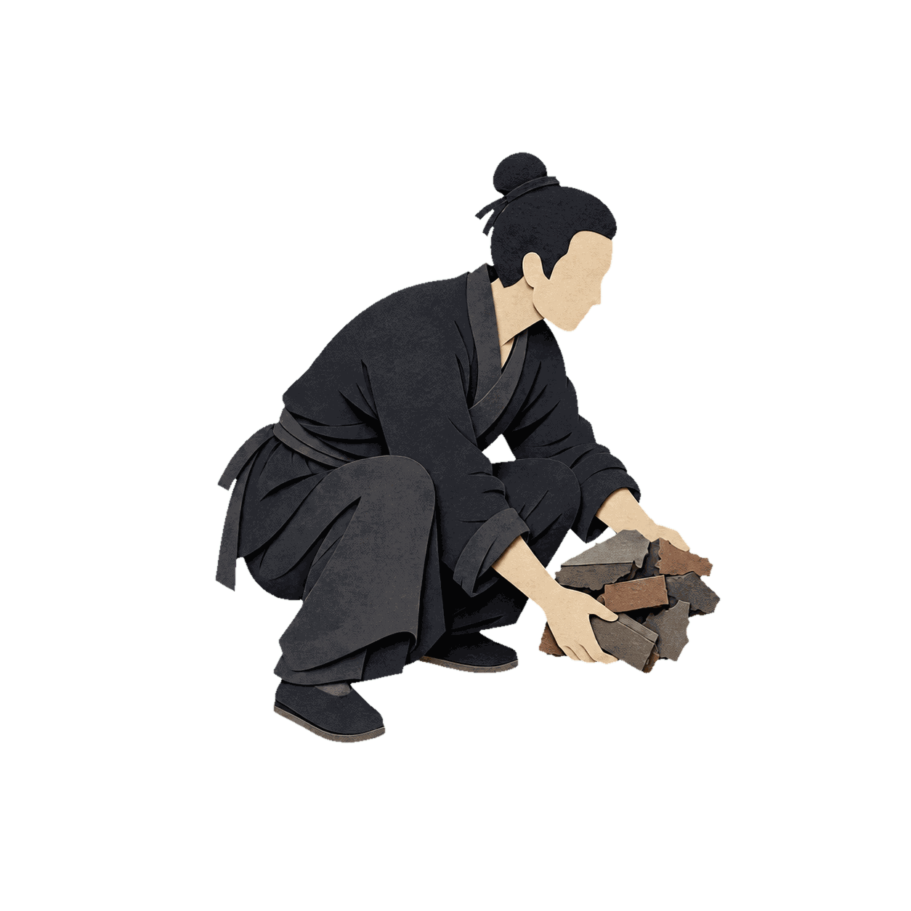
罗显叫来几个族人把瓦砾清了。
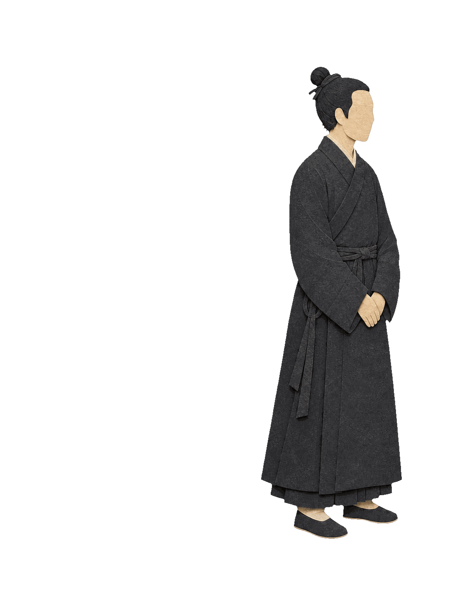
等寺里管营造的和尚佛熙出来给个说法。
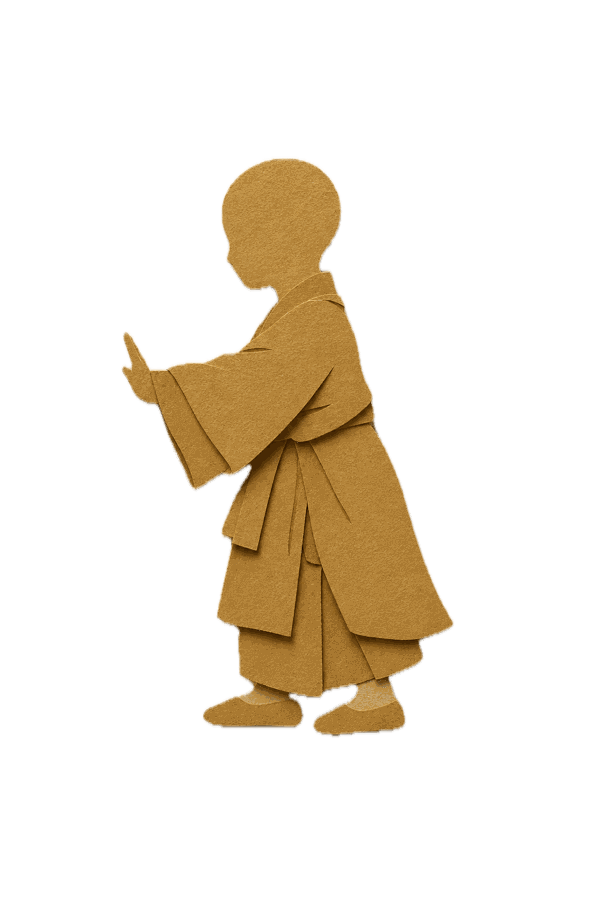
佛熙没露面，打发一个小沙弥出来传话。
传的不是道歉，是一个要求：请罗家把祖坟迁出杨干院。
守坟的开口赶坟，天底下哪有这个道理。
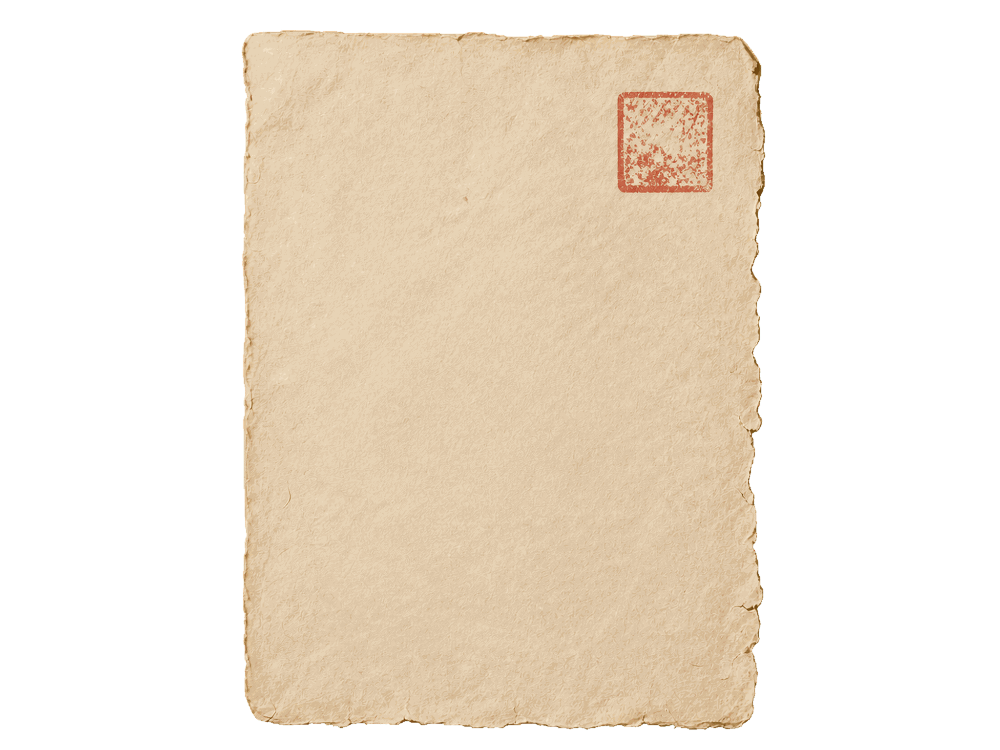
僞造祖墳
呈坎羅顯 嘉靖七年四月 仰即赴縣聽審
几天后，等来的却是县衙的传票。佛熙抢先把他告了。状子上的罪名是：伪造祖坟。
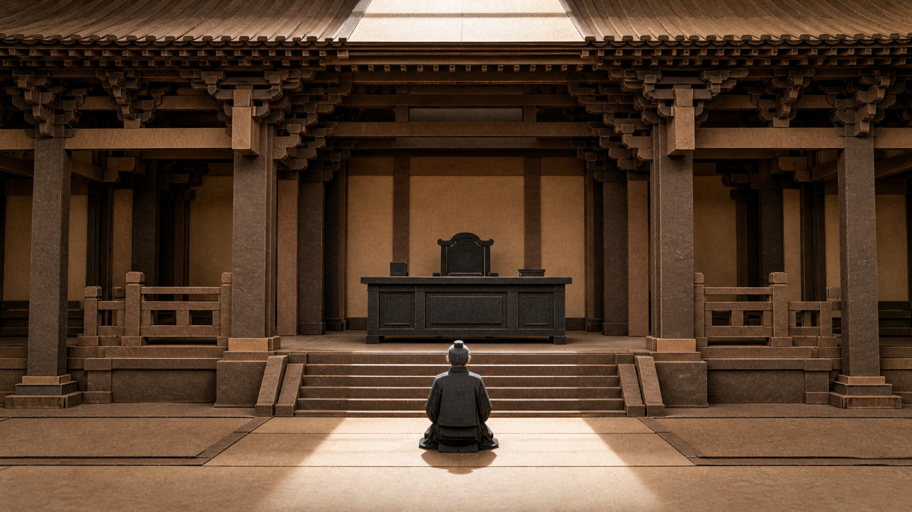
自家六百年的祖坟，如今要由罗显跪在公堂上，向官府证明它是真的。而且从传票送到那天起，他就已经是被告了。
守坟的和尚，怎么敢反过来赶坟主？这事，得从这座寺的来历说起。
§二 坟寺
南宋宝祐六年（1258），罗显的先人、当时罗家的当家人罗鼐，正为一件事犯愁：族人散到各乡，每年上坟的人一年比一年少，老人走不动，年轻人站在坟前不认得这是谁。他操心的，就是二百七十年后被碎砖烂瓦压住的那座坟——同一座坟。
罗鼐的办法是在坟旁盖一座寺，划田产给僧人常年守坟。这样的寺叫坟寺，相当于给祖宗雇一班常年领工钱的守墓人。
这件事还有一重保险。罗鼐的岳父程元凤，官做到右丞相兼枢密使，亲笔为建院写了一篇碑记，刻石立在院旁。
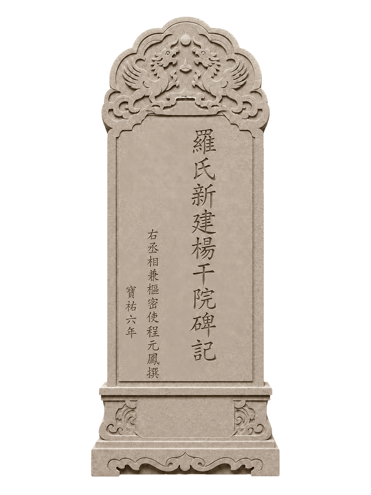
谁想打这座坟的主意，先得掂量掂量碑上那个丞相的名字。
程元凤在碑记里防了两种人：自家不成器的子孙，外面有势力的觊觎者。
他唯一没有防的，是他亲手安排来守坟的人。
宝祐
元末
洪武
嘉靖
宝祐年间：坟在院子中央，寺是罗家盖来给它守坟的。
元末：观音堂盖了起来，一道墙横在坟前。
洪武以后：钟楼鼓楼接着起，坟只剩一个土顶。
嘉靖初：屋檐几乎接到坟前，上坟的小路长满了草。
二百七十年里，寺一天天兴旺：观音堂盖起来，钟楼鼓楼接着起，田产越添越多，进香的人越来越多。坟那一头正相反：罗家的墓祠塌了，一直没人修，上坟的人越来越少。到嘉靖初年，这座六百年的祖坟，只剩下大寺屋檐夹缝里的一个土顶。
管全徽州府和尚的官，叫都纲。这一任都纲法椿，就是杨干院自己的人：邻县休宁人，十一岁进院，拜住持佛海为师。这官历来明码标价，谁出得起钱、有各寺住持联名担保，谁就是「高僧大德」；佛海就做过都纲，师父退了，徒弟花钱接着做。而佛熙——倒瓦砾、赶坟主、抢先告状的那一位——正是佛海的师弟，法椿的师叔。
都纲：明朝给僧人也设了一套衙门——京城有僧录司，府有僧纲司，州有僧正司，县有僧会司。府一级设都纲一员，从九品，明朝官阶里最低的一级，不发俸禄。他管一府的寺院和僧人：僧人的名籍、度牒（官府发的出家凭证，没有度牒出家就是非法），僧俗之间起了纠纷也常先经他的手。按制度，都纲要从戒行好、通晓经义的僧人里选；嘉靖年间的徽州，实际做法是出钱，再凑齐各寺住持的联名保结。法椿的都纲就是这样来的。
佛熙敢把垃圾倒在坟上，敢开口赶坟主，底气就在这儿。
§三 第一场公堂
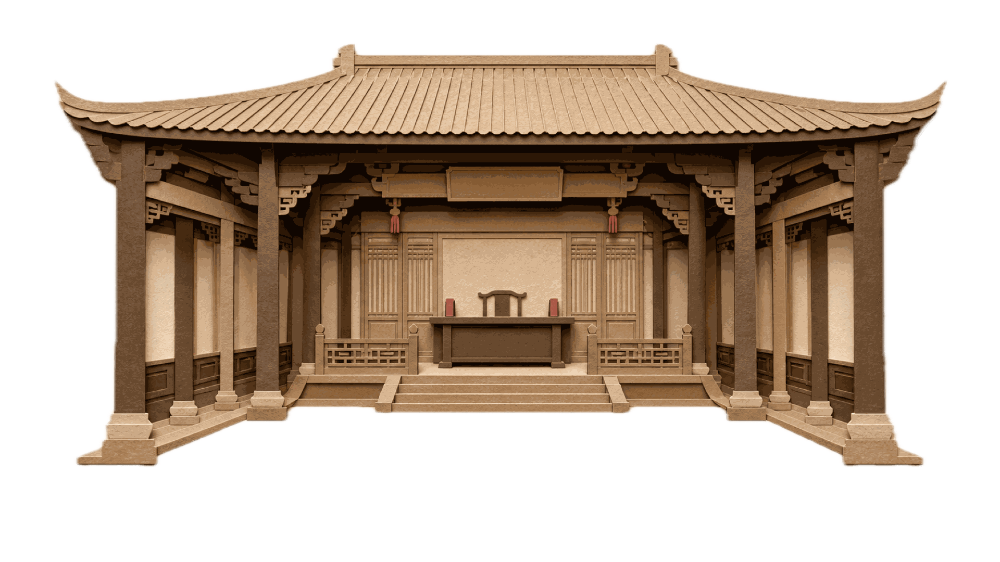
佛熙抢先告状，看着只是快了几天，作用远不止如此。
第一，按明代的规矩，百姓打官司得先找里老调解，调解不成才许告官。但寺庙告状不用走这道手续。所以罗显要告佛熙，得排队；佛熙告罗显，直接开庭。
第二，谁先告，谁就定了这场官司审什么。状子立的是"罗家伪造祖坟"，那公堂上从头到尾辨的就是这件事。罗显一张嘴，就是在自辩。
第三，按朝廷条文，寺庙当原告的官司，管和尚的官——都纲——有权到堂。
里老：明朝把乡村编成"里"，一百一十户为一里。每里从年高有德的老人里推举几位，叫里老人，简称里老。朝廷交给他们的差事之一是调解纠纷：田土、婚姻、斗殴这类事，先由里老评理，评不成才许递状子进衙门；越过里老直接告官，状子可能被驳回。所以对普通百姓来说，里老是打官司绕不开的第一道门。
开堂那天，罗显走进县衙，一抬头——
他有四样东西：坟就在那里，唐朝末年就有了；丞相程元凤的碑；府志县志，白纸黑字记着罗坟；族谱记着，四邻八舍都能作证。他觉得这官司没法输。
法椿坟？诸位看看那坟：形制窄小，八层砖围，砖缝里连石灰都没有。
哪家六百年的祖坟，修成这样？分明是新近草草堆的。
罗显胡说！这坟唐朝末年就在了！
族谱上写着，四邻八舍全可以传来问！
法椿族谱，是罗家自家修的。四邻八舍，堂上自会传问。
再说志书。志书里罗坟的记载，就一句话，位置含糊——凭什么说，就是院里这一座？
罗显碑！丞相程元凤亲笔的碑，就立在那里！
法椿正要说碑。碑记写得清楚：那座院子，从宁泰乡迁来。
本院院史，唐咸通二年始建，起在孝女乡，三迁才到杨干——跟宁泰乡毫无关系。
碑记里那座院子，压根不是本院。
换句话说：你们罗家，几百年来，拜错坟了。
罗显我——
法椿还有一样。
洪武二十四年，流水保簿，宾字一千九百九十九号。
杨干院名下全部产业，簿上写着四个字——
流水保簿：洪武二十四年（1391），朝廷清丈天下土地，寺庙的田产逐项登记造册、编号存档，这种册子叫流水保簿——相当于官方的不动产登记簿。簿上怎么写，产权在官府眼里就算怎么定；口说、族谱、碑记，都比不过它一行登记。
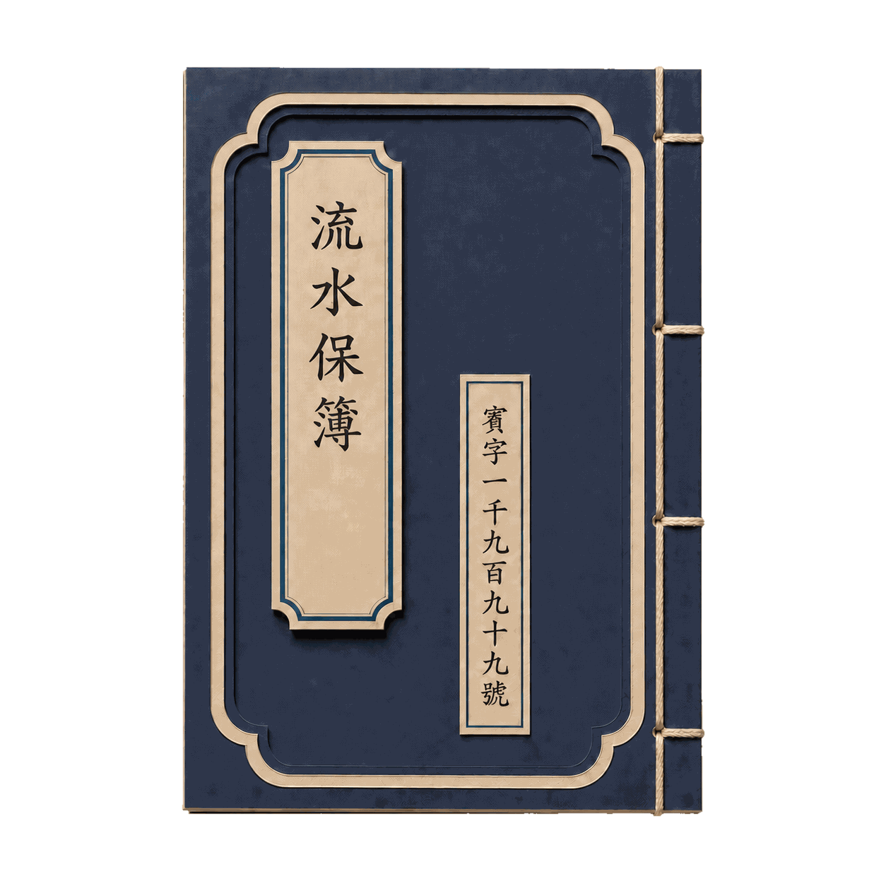
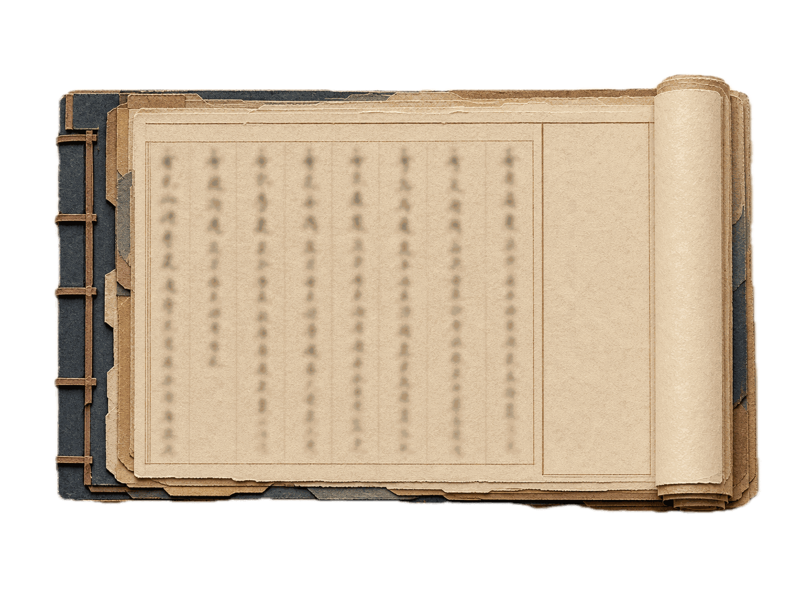
皆寺經理
皆寺經理
皆寺經理
皆寺經理
法椿全部产业归寺经管。没有罗家什么事。
法椿小僧还有一句，请老爷记入案卷。
本寺自洪武年间起，一次次盖房，法堂离前殿不到四步——中间真有你家祖坟，早压着了。
你罗家一百多年，怎么一声不吭？
罗显我们……我小时候，还来上过坟……
自洪武至弘治，节次修盖法堂，与前殿相去不满四步，中果有坟，当必侵压，本家何无言论？
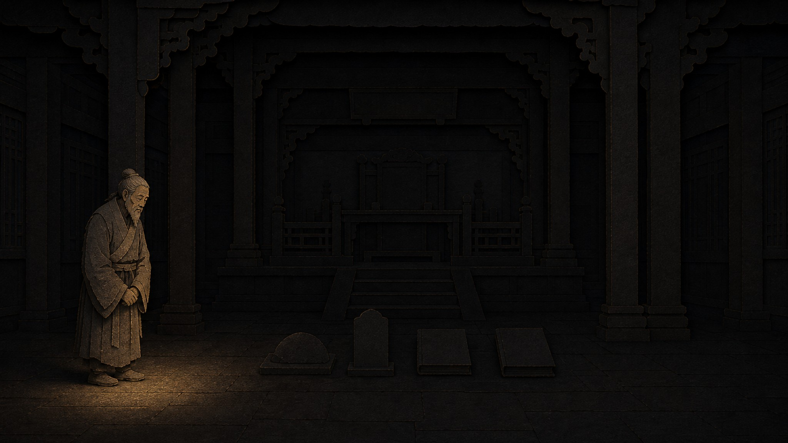
站在堂下的罗显被驳得说不出话。
他这才明白，官司比的不是坟的年头，是手里的凭据。
眼下经得起查的凭据，全在对方手里。
§四 铲坟
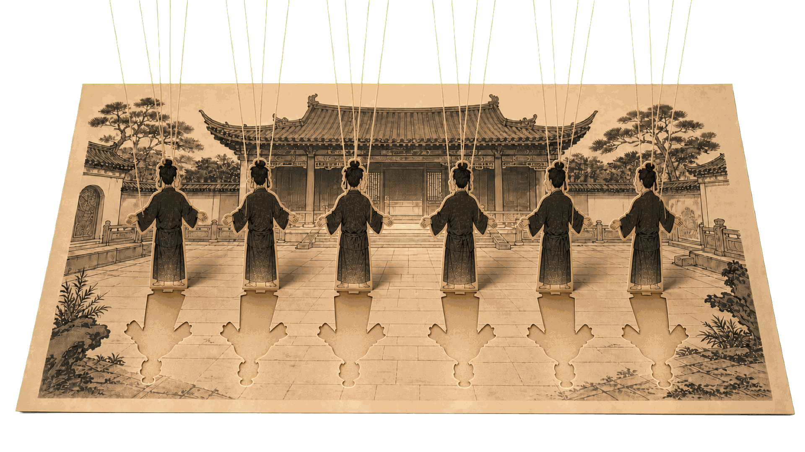
传来的证人一个个上了堂，个个支支吾吾——寺里早把他们买通了。牵着这些纸人的线，那一头，在都纲法椿手里。
更难看的还在后头：两个早就分家出去的罗姓族人，罗承善、罗互社，当堂跳出来，指着罗显说他的不是。站在堂上那一刻，他只看见一件事：满堂的证人，没有一个肯帮他说话。
再看主审的知县高琦。方志里留着对他的评价：为一点小罪就动刑，人不服，他趁怒接着打，打死过人；而且贪财，从来没有满足的时候。
一个孤立无援的乡下老头，站在一个收了钱、动不动就打死人的法官面前，能怎么办？罗显怕了，认了罪。
判决下来：所谓罗坟，只是"浮堆"——不是坟，是一堆浮土。县衙随后派人把它铲平了。差役动锹的那天，距罗秋隐下葬，已经过去六百多年。
§五 四千两
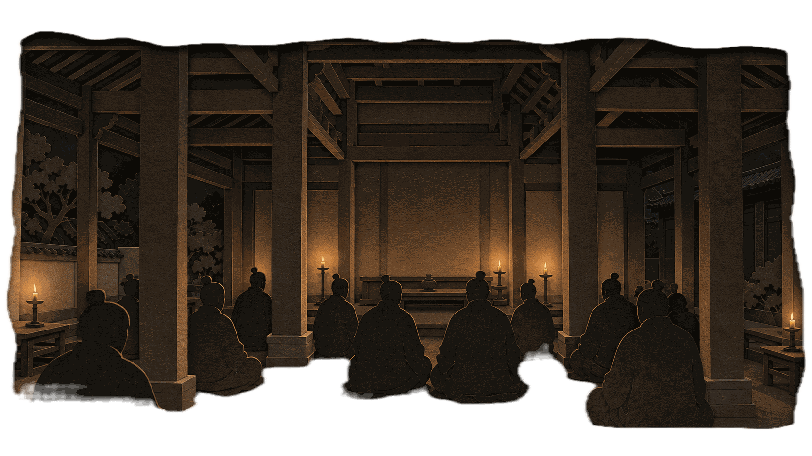
县衙的判决下来之后，罗显回到呈坎，把各房家长请进了祠堂。
罗显各位当家的，我把话说在明处。这一场官司，不是替我罗显出气。
坟叫官府判成了假的，罗家的来历就是假的。
族谱从那座坟写起。几百口人凭什么算一家人？凭的就是坟里那位祖宗。
今天守坟的和尚敢夺坟，官府肯帮着夺；明天就有人来夺田、夺屋、夺祠堂。
这口气要是咽了，罗家往后在歙县，就是谁都可以下手的人家。
一位家长我们房，出七百二十两。
另几位六百五十两。 三百。 一百。
最末一位，半晌……十几两。我们也出。
罗显再要八个人，跟我专办这场官司。
全族凑出约四千两银子，够买八千石大米，是几辈子攒下的家底。打官司要花这么多钱，是因为明代的官司输了可以往上告：县上面有府，府上面有省里的监察官，最顶上是京城，一层层告上去都合法。可每上一层都要钱——写状要钱，书吏要钱，差役要钱；案子每换一个衙门，证词重新问一遍，案卷重新调一遍，等于从头再打一遍。四千两，就是为这个准备的。
歙县不能去，刚在那里输过；徽州府跟歙县同城，法椿的银子和关系一样使得上。罗显去了第三个地方：巡按察院。
巡按御史：朝廷从京城派往各省的监察官，正式身份是都察院的监察御史，品级只有七品，却代表朝廷巡查一省——官员称不称职、有没有冤案，都归他管，人称"代天子巡狩"。他不是本地人，任期一到就走，地方的人情面子对他不好使，银子也不容易递到他面前。巡抚则是一省的最高长官，官比巡按大得多，管的事也杂；正因为管得杂，民间的纠纷他通常不亲自审，批一句话，发回当地衙门去办。
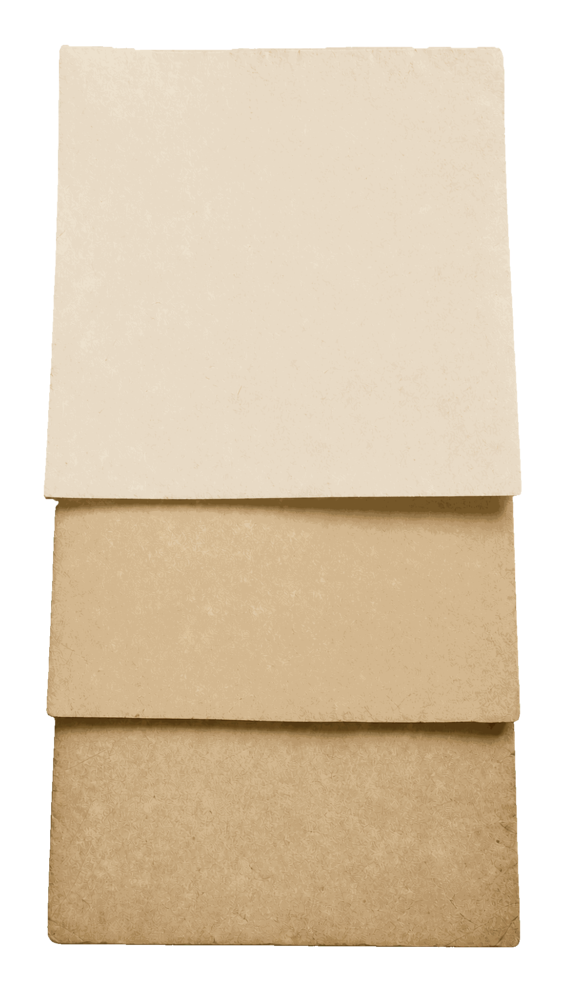
先告寺僧不法
次陳墳墓來歷
末告知縣受贓
状子的写法也讲究：先不提坟，先告杨干院招纳流民、僧人不守清规，让看状子的人先认定这是一群不法之僧；然后才讲坟的来历；最后把知县高琦一并告上——受赃，滥用刑罚。告官这一笔是要点：按《大明会典》，状子里若有官吏用刑逼供、制造冤案的情节，巡按不许转给别人，必须亲自审问。他给自己留了后手。
《大明会典》：明代官修的行政法规汇编，把各衙门的职掌、办事条例逐条编定，是官员办事的依据。它规定诉状中若有官吏"枉问刑名"（用刑逼供、制造冤案）的情节，巡按御史不得转委他人，必须亲自审问——这是罗显在状子末尾告高琦的用意。
巡按把案子转给了邻府宁国府。推官郭凤仪把调查做了全套：调歙县原案卷宗，调古今郡志、寺碑、家谱，把里老邻居重新问了一遍。
推官：明代府一级掌管刑名的属官，正七品，专管审理案件、复核案卷。知府事务繁杂，具体的审问、勘验多由推官经手；一府的司法水准，常常就取决于这个位置上坐的是什么人。
最后派人翻过黄山，到杨干院实地开挖。
砖砌的墓圹，露出来了。它一直就在那儿。
这是六百年里头一回，这座坟要靠差役挖开泥土，向官府证明它存在。
§六 两年
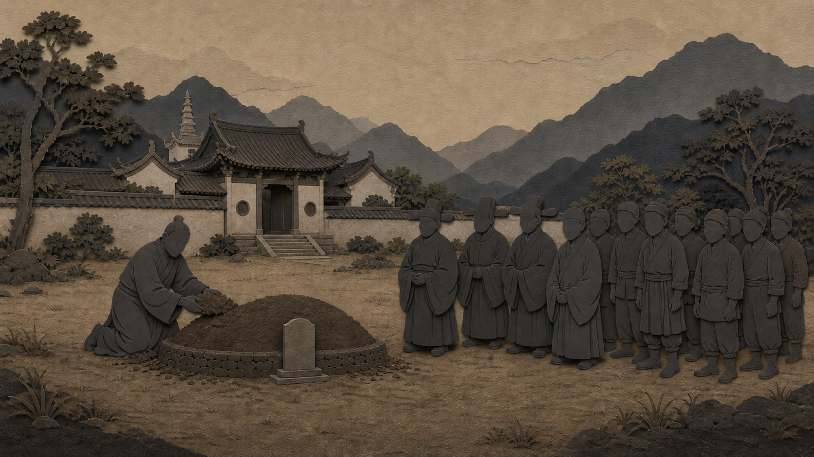
还坟那天，官府派员到场监督，杨干院全体和尚、附近的里老和邻人都被叫来观看。佛熙当着这些人的面，把自己下令铲平的坟一抔土一抔土堆了回去。堆完，他一句话没说，转身走了。罗家等这一天，等了两年。
宁国府的判决是这样的：坟是真的，坟堆要修回去；当初是佛熙下令铲的，就罚佛熙本人把它修回来。罗家每年清明上坟祭扫的权利归还。观音堂东边拨出一间屋，给罗家立祠堂。另外查实佛熙与妇人满真通奸，追回度牒，勒令还俗。
度牒：朝廷发给僧人的身份凭证，相当于出家的执照——领了它，才是官府承认的和尚，可以免除赋役；没有它出家，就是私自剃度，官府查到要治罪。它由礼部统一印发，上面写着法名、籍贯、所属寺院。收回度牒，等于开除僧籍、赶回家当老百姓，对一个和尚来说是身份上最重的处罚。
随后，官府让两家各立一份甘结，各自签字画押。
甘结：明代结案时的一道手续——打官司的双方在官府写下保证书，签字画押，承诺服从判决，今后不再为这件事告状。立了甘结，案子在官府的记录上就算了结。后来这一纸甘结从案卷里不见了，法椿要翻案，缺的正是它。
坟回来了，官司也赢了，但这份判决两家都不满意。它把祭祀的权利和寺产分开：罗家可以每年来祭坟，寺产仍归寺院，并且写明不许罗家借这座坟主张寺产。和尚们要的是一座没有坟、产权清楚的寺院，如今坟修了回来，寺里还多出一间罗家的祠堂。罗家则认为整个杨干院本来就是自家出钱盖的，如今只拿回一座坟和一间屋。
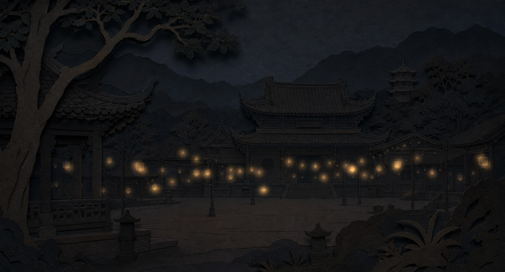
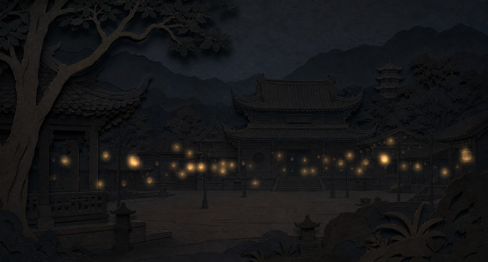
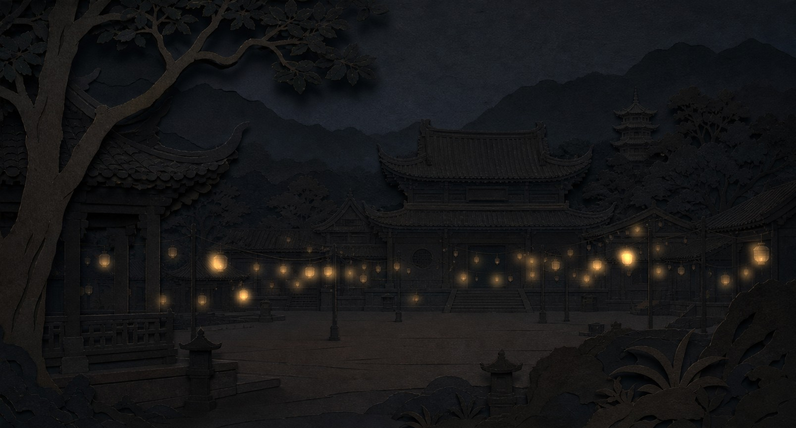
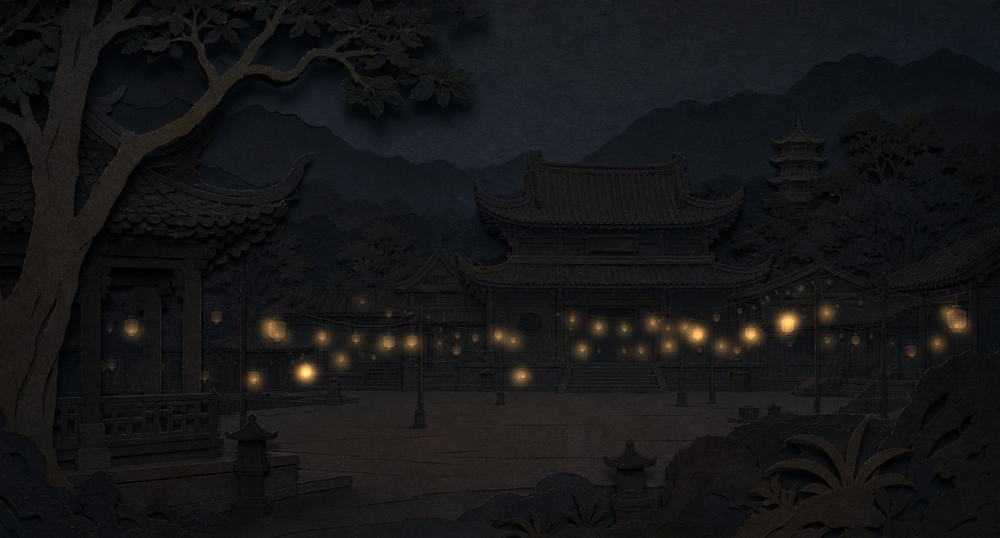
嘉靖九年（1530）七月十五，中元节，杨干院办大法会，僧俗男女都能进寺。呈坎的年轻人成群去看热闹，罗家的义子郑来保也去了，还带着妻子和族里几位女眷。
那一夜，寺里出了人命：一场斗殴里，郑来保被打死了。尸体被一个叫智灯的和尚运出寺去，烧掉了。人死了，尸首也烧没了，究竟怎么死的，从此死无对证。
告為人命事
羅氏圖謀寺產 糾眾入寺行兇
毆死本院僧人能霓 佛圓
罗家的丧事还没办完，杨干院的状子已经递到了衙门。状子上写的是另一回事：罗家人图谋寺产，纠集人手闯进法会寻衅，打死了本院的两个和尚，能霓和佛圆。同一个夜里，死的是罗家的义子；递上去的状子却说死的是寺里的和尚，动手的是罗家。两年前佛熙抢在罗显之前告他伪造祖坟，这一回法椿抢在罗家之前告他们行凶杀人——先递状子的那一方，决定这场官司审什么。
为什么非造一桩命案不可？因为两家立过甘结，保证过不再告，坟案直接翻案没有名目；而人命是重罪，只要立起一桩新的命案，就能把旧案一并带出来重审。郑来保死得不明不白，这件事落到法椿手里，成了一个机会。
往哪儿递状，法椿也跟罗显学会了。他把状子递进了巡抚衙门。巡抚有个惯例：民间纠纷不亲自审，批一句话，发回当地衙门去办。状子一转，回了徽州府——法椿做都纲的地方。同一套衙门制度，两年前罗显用它把案子送出了徽州，这回法椿用它把案子接回了自己的地盘。
§七 翻盘与失窃
罗显这回没有等着开庭。他先去了一趟巡按察院，把郑来保被打死的事又原样告了一遍——同一件事，告了两个衙门。
这一步的用处，在两个衙门转案的规矩不一样。巡抚接了民间的状子，批一句话发回地方，就算办完，此后不再过问。巡按不同：他转出去的案子要登记编号，定下审结的期限，到期不结要追究经办的官员，结了案还得回报给他核准。案子经巡按转一道，头上就多了一层盯着的人。
徽州知府因此不敢把这案子随手交给下面的推官，改派府里的二号人物、同知李邦亲自审。买通一个推官，法椿出得起这个价；李邦是知府的副手，案子又在巡按那里挂着号，他要是徇私，丢的是自己的官。
另一头是证人。罗家吃过证人被收买的亏，这回派人留意那几户排年的动静。里头有个胡通进，欠着旧债，拿到佛熙的银子转身就去还账，让罗家的人看见了。上门一问，原委全说了出来。
同知：明代一个府的长官是知府，同知是知府的副手，正五品，一府通常设一两员，分管粮务、治安或案件。知府管全局，要紧的案子常交同知去审。
排年：明代乡村按户编册，一百一十户编成一里；一里之中田粮丁口最多的十户轮流当里长，十年轮一遍。轮到当值的那一年叫现年，也写作见年；没轮到的年份叫排年，所谓「本里排年」，说的就是这十户里当年不当值的那几户人家。不当值不等于没干系：他们仍是里中管事的人户，地方上出了事、官府要查问，常先传他们到堂作证。这也是这场官司里两边都肯出大钱买他们的缘故。
佛熙诸位排年，都是乡里乡亲。佛熙先敬各位一杯。
佛熙状子，上头已经批下来了。
开审那天——各位记得，该怎么说。
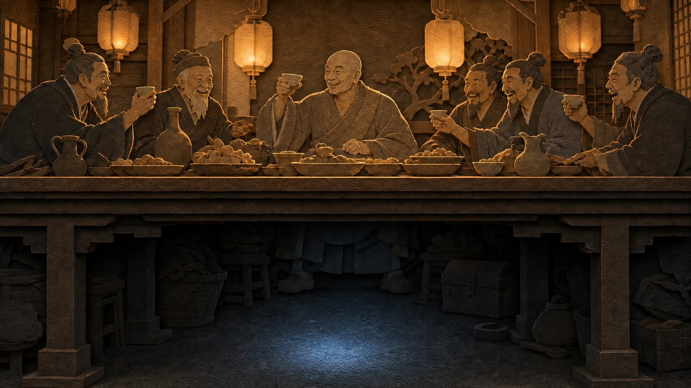
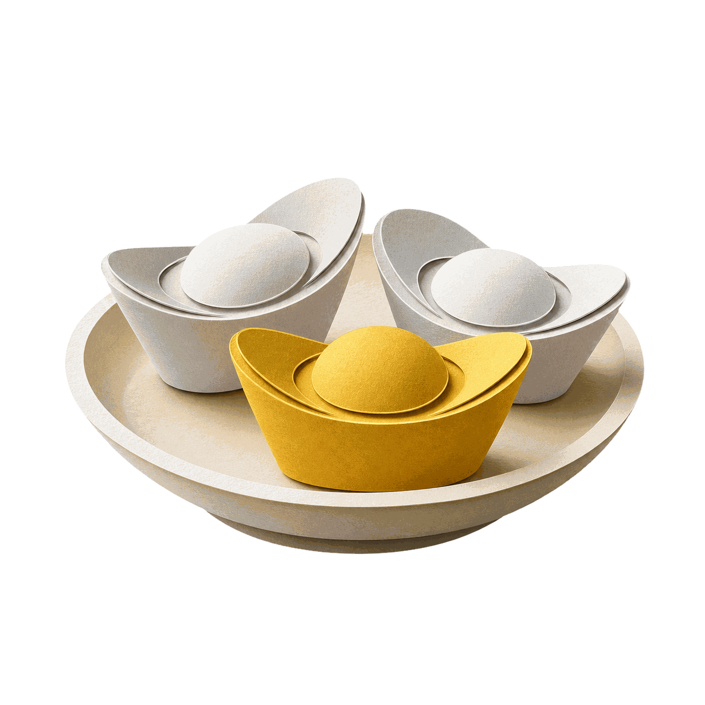
佛熙不白难为各位。
金三两一钱，银三十两，当场分掉。
法椿请传本里排年，上堂作——
罗显且慢。小人有一件事，先禀老爷。
去年十一月二十五，杨干院摆酒一桌，请的全是本里排年。
席上分金三两一钱、银三十两，叫各位上了堂，记住该怎么说。
收了钱的都有谁——名字，小人一个一个报。
胡通进（跪下）金……金三钱一分，银三两，小的都带来了。
小的招。全招。
三年前的公堂上，罗显被法椿驳得一个字说不出，最后按了手印认罪。这一次，他把对方每一笔贿银的数目、日子、收钱人的名字，当着堂上的人一项一项报了出来。
收买证人有个买主补不上的漏洞：钱一旦交到证人手里，就成了可以呈上公堂的东西。这几个排年都是本乡的平民，经不住当堂对质；交出银子、说明来路，比替和尚顶罪合算得多。
命案那夜在场的两个目击者，官府去传，回报说：都病故了，已经下葬。人证一断，命案查不下去；法椿蹲大牢的由头定不下来。关不住，只好放人。
李邦要调坟案的旧卷宗。派去调卷的差役被佛熙收买，称病躺家里，一个没剃度的僧徒冒名顶替，把案卷顺顺当当领了出来——先送佛熙过目。佛熙把宁国府那卷抽走，剩下的送进徽州府。官府自己的案卷，从宁国府调往徽州府，中间在佛熙手里过了一道：两卷进去，一卷出来。
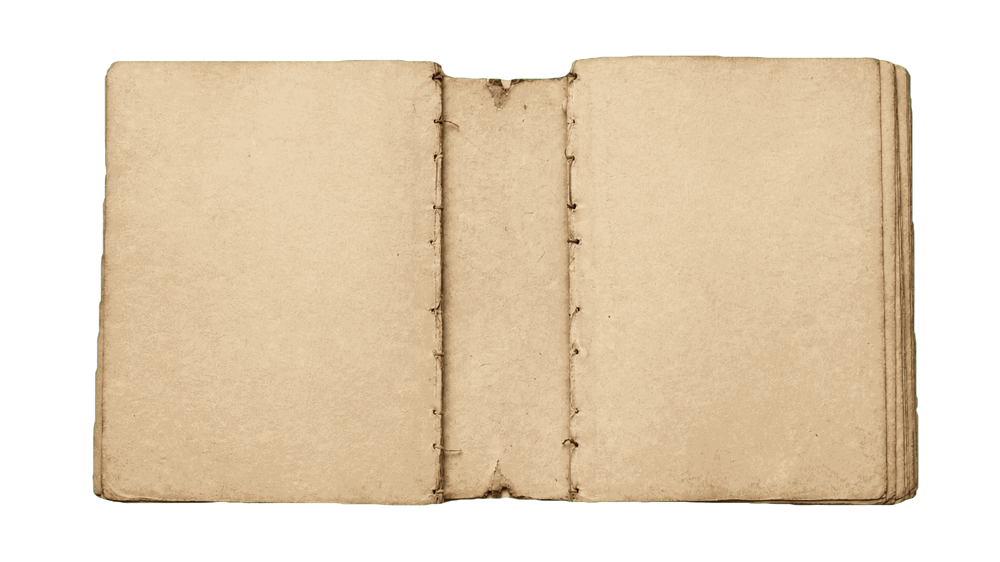
歙縣原問一卷
寧國府審一卷
甘 結
失而复得的卷宗，罗显一页一页点。还是少了一纸：正是当年两家画押立下的那份甘结。对方连偷去的案卷都肯还回来，却单单留下这张保证永不再告的甘结——说明他们还打算再告。
§八 夜审
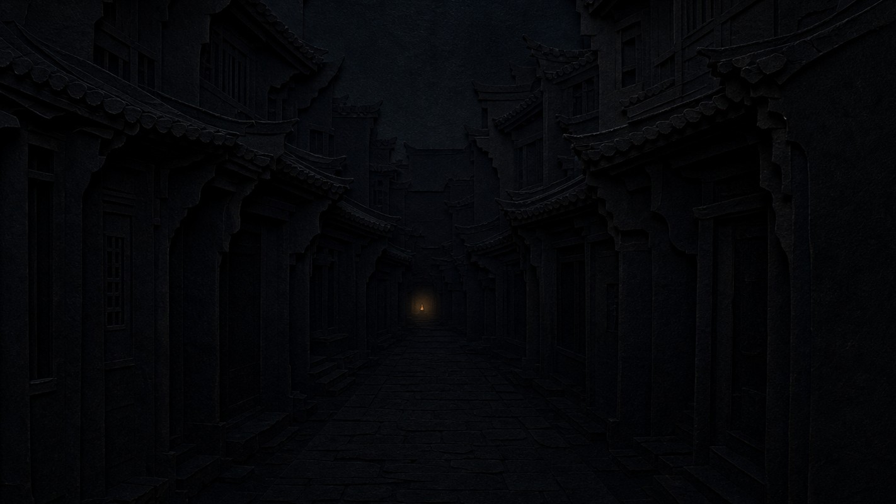
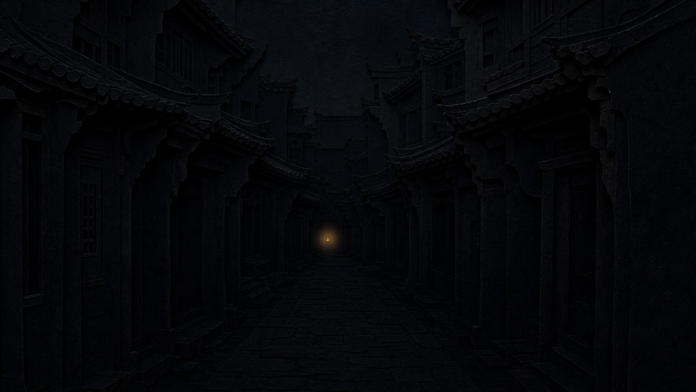
李邦手上积了好几桩互相牵连的案子。他请两位邻县的知县来合议并审，本县官员一律回避。两位知县审完，判决下来了：坟是真的，维持宁国府的原判，立下界石；罗显、法椿，各打八十板；佛熙行贿、偷换文书，勒令还俗。至于人命——能霓、佛圆、郑来保，加上那两个死在牢里的证人，五条人命，判词里一律写作病故，不再追究了。
法椿输了这一场。可他挨着打，脑子还在转：他从这份判决里读出了官府的心思——两位知县不是查不出那五条人命，是不想再查了。案子越乱，官府越想早点收场；越想收场，判起来就越肯含糊。
羅顯買囑作證 銀五十兩
羅顯買囑作證 銀五十兩
羅顯買囑作證 銀五十兩
羅顯買囑作證 銀五十兩
羅顯買囑作證 銀五十兩
羅顯買囑作證 銀五十兩
六份供词，字字相同：羅顯買囑作證 銀五十兩
那六个刚挨过板子的排年，法椿给每人送去五十两银子。过了些日子，这六个人各自捧着五十两银子到官府"上缴"，检举说：这是当年罗显收买我们作证的赃款。银子是真的，上缴是真的，六份口供还互相印证；整件事里唯一的假，是这笔钱真正的来路——而钱的来路，恰恰谁也没法证明。罗显几乎无从辩起。
新上任的巡按不了解这几年的恩怨，把要求复审的命案交给了西北面的邻府池州——那六份"上缴"的赃证，一并随案卷移了过去。前头八年的恩恩怨怨，池州一概不知道。
开庭定在傍晚。府城入夜要宵禁，鼓一响，街上就没有人了，公堂外连一个围观的百姓都没有。
宵禁：明代府县城入夜击鼓禁行，街上不许有人走动。把开庭安排在宵禁之后，堂外就不可能有围观的百姓；堂上发生什么，外面没有人看见。
罗显小人有辩——
差役肃静！
罗显请传邻证——
罗显请调宁国府原案——
推官（不看他，像交代一件公事）时辰不早了。
夹起来。
夹棍，夹小腿骨的刑具。那天晚上，用在了一个六十多岁的乡下人身上。
他后来在状子里记这一晚，只用了四个字——
不意奸僧串通积年打点衙门钻户唐文魁，贿嘱官吏。至九月十五日，计延傍晚到所，不审邻佑，不详原案，不取服辨，非法夹打。
素有古墳一所素無古墳一所
院內舊有墳院內舊無墳
親見羅氏有墳親見羅氏無墳
其地果有墳其地果無墳
价钱是改一处、一两银子。
卷宗也动了手脚。主审的推官买通了抄写文书的小吏——把历年案卷里邻佑证词中的"有坟"，一处一处，全改成"无坟"。纸面上还是那些证人的名字，可他们说的话，已经整个反了过来。
一个深夜，三百多人举着火把进了杨干院，把那座坟从顶上挖开。火把底下，砖砌的墓室露了出来，还有一方墓志——在场几百人，全都看见了。没挖到的，是棺木和尸骨。有砖有墓志，可以说这是坟；没有棺木尸骨，也可以说这是伪造。反正第二天一早，这批人又来了一趟，把整个现场铲得干干净净。
坟没了，案子还在。罗显接着告。
他先去宁国府。宁国府说，这案子已经转给池州了，本府不再管。
证人的口供改了，案卷的字改了，坟挖开又铲平了。这场官司走到这里，能证明这座坟存在的东西，都被动过了。
§九 京城
池州那份判决，是从一个收了钱的法官手里出来的；判决本身翻不了，那就告做出这份判决的人。会典的规矩：告官的案子，要交给被告官员的上级去审。池州府再往上，这一带已经没有更高的地方衙门了，案子于是落回巡按御史手里。这一回，他必须亲自审，再也没有可以往下推的地方了。
巡按詹宽接了案。对那些被改来改去的口供和卷宗，他一个字也没有理会——改过多少手，真假早就分不清了。他把整个案子换了一种审理的办法，搬出了另一样东西：朝廷的礼制。先判罗家：平民的祖先不得立祠专祭，这坟违制，要铲平。再判寺里：新塑的佛像，形同朝廷明令禁止的淫祠，佛殿要拆除。
淫祠：不在朝廷祀典之内、未经官府许可的祠庙和祭祀。"淫"在这里是过滥、不合规矩的意思，不是别的。明代法令明文禁止民间私立这类祠祀，查出来就要拆毁。
嘉靖十二年（1533）十二月，官府的人开进杨干院。那座坟第二次被铲平，佛殿也拆毁了；寺的中堂改成一座祠堂，用来祭祀当年写碑的程元凤——理由是，碑上有他的名字。老丞相当年写下那块碑，是为了护住女婿家的坟。三百年后，他自己被请上了供桌，受人香火；而他要护的那座坟，就在供桌几步之外，被铲成了平地。
八年了，证人、法官、差役、书吏，两边谁都买通过，什么都能用钱办成。到这里，才头一回碰上一样用钱办不动的东西：朝廷的礼制。詹宽不问谁有理，也不问谁出价高，照着礼典，把两家各自最看重的东西都罚掉了：罗家失了坟，寺里失了佛殿。官司到这里，法椿收了手。罗显没有停。
法椿
佛熙
能霓故
智燈
佛圓故
法明
能証
佛海
他终于查明白了：能霓、佛圆这两个人，早在这场官司开始之前就已经死了。杨干院一直给死去的和尚保留僧籍，官府来核查人头、摊派差役的时候，就拿死人的名字充数。也就是说，那两个"被罗家打死"的和尚，案发的时候根本就不在人世。
可是拿着这条新罪证，罗显却发现已经没有地方可告了。地方大大小小的衙门，八年里他全都告遍了。再往上，就只剩京城。上京告状，明代叫京诉。这件事本身就是一桩罪：不管告得对不对，告状的人先问罪、先坐牢。罗显年纪大了，律法也不准老人上京告状。这时候，侄子罗兴站了出来。
京诉：明代不许越级告状。把状子越过县、府、省直接递到京城，本身就是一条罪，叫越诉：不管冤枉不冤枉，先按越诉治罪——挨板子、下监狱，然后案子才开始审。所以进京告状的人，第一站一定是监狱。律法还规定老人不得上京，罗显去不了，只能是罗兴去。
他清楚地知道这一趟进京，第一站就是监狱；他还是去了。
嘉靖十四年（1535）年初，罗兴带着状纸到了京城，把状子递进通政司。通政司验过状子，收下了，随后把他关进监狱。这不是办错了：明代的律法规定，越过县、府、省直接进京告状，这件事本身就是一条罪；告状的人先按这条罪关押，案子才开始审。关他的每一道手续，都合乎律法。
通政司：朝廷接收天下奏章和申冤文书的总衙门，设在京城。各地送来的奏本、状纸，先经它验收登记，再分送皇帝和各衙门；它的长官叫通政使，有资格在早朝上把要紧的文书当众奏报。
四月十二日，奉天门早朝。通政使陈经出列，把徽州府歙县一座祖坟的案子，当众奏到了嘉靖皇帝面前。
说来也巧。这位皇帝本是藩王之子，登基以后，为了给自己的亲生父亲争一个皇家的名分，跟满朝文武争了十几年，到这时还没有平息。一个宗族，为始祖的名分打了八年官司、坐了牢、告到御前——这张状纸，偏偏就送到了这样一位皇帝的面前。
§十 终判与残页
皇帝下旨，把案子交给都察院；都察院再往下批转。八年来被抢过、藏过、偷换过、涂改过的案卷，头一回全部摊开在同一张桌上。
都察院：朝廷的最高监察衙门，管纠察百官、审理官员违法的案子。派往各省的巡按御史，就出自这里。
羅秋隱唐時人 葬於楊干屬實
歷年久遠 遺骸化為泥土 合乎常理
墳判歸羅氏 照舊修葺
墓誌重埋墳前 子孫永遠祭掃
终判下来了。判词说：罗秋隐是唐时人，葬在杨干，属实，不是假坟。至于挖不出尸骨——几百年过去，遗骸化为泥土，合乎常理，不能拿这个说坟是假的。坟判归罗家，照旧修葺；那方墓志重新埋回坟前；罗家子孙，永远祭扫。
六百年的坟是真的——就为了官府这一句话，罗家花了八年、四千两银子，两次眼看着祖坟被铲平，还搭进去一场牢狱。可这份判决读到量刑的地方，有一处让人意外：罗显，杖九十；法椿，杖七十。赢了官司的罗家，挨的板子反而比输家还重。
这份把八年是非一件一件都作了交代的终判，唯独有一个人，从头到尾没有下文：郑来保。八年了，他的死始终没有得到一个说法。也许真相就是病故——是罗家把一场丧事，写成了对手的命案。罗显那个"奏事不实"，虚的正是这一笔。他自己刻的书里，这一页也没有留下半句自辩。
那方墓志，重新埋回坟前。
三年后，嘉靖十七年（1538），罗显干了他这场官司里的最后一件事：把八年案卷，刻成了一册书。
族人八年的卷宗都在，怎么单刻这一本？都刻上罢。
罗显案卷太繁，翻来覆去，读的人要打瞌睡的。只刻终审归结这一本。
族人那法椿告我们的那些话呢？也印出去，传到外头像什么样子。
罗显这书是要呈上公堂的。单有我们自家的话，人家一句"你们编的"，几百本就全白刻了。
为什么自己刻？因为八年里他亲眼见过：官府的案卷，能被人冒名领走，能被抽掉一卷，能被一两银子一处地改字。他谁也不信了。
案牍烦隈，辞重意复，观者厌倦……散之本族，家藏一帖……杜窥伺之邪心。
恃党扶图谋泯没，蒙天理昭报显明……訐奏七本，首尾八年始得归结。
印成几百册，散给族里各房，一家藏一册。
同一年，北京的皇帝如愿给亲生父亲追尊了庙号。一个皇帝和一个徽州族长，同一年里，各自了结了为祖先名分的战争。
庙号：皇帝死后在太庙里被供奉时用的称号，像某祖、某宗。给一个没做过皇帝的人追尊庙号，等于把他抬进皇帝的行列——在朝廷的礼制里，这是天大的事。
三十年后，官府重修《徽州府志》，杨干寺条目下的来历，改成了罗家在公堂上主张的那个版本。
罗显那册书，今天收在北京，中国社会科学院历史研究所的图书馆里。一函一册，二十六叶，一万多字。你刚读完的这八年——公堂上的每句对质，酒宴上的每笔贿银——几乎全部来自这册书。
官府案卷吃过的那些亏——被偷、被换、被改——这册书都防住了。可它传到今天，还是缺了一叶。二十六叶里少了一叶，少的那一叶正好从一句话中间断开：前一页的末尾，印着四个字——
審得各犯情詞及查碑文古志則
是寺因墳而建墳因寺以廢以理
言之毀寺而存墳可也廢墳而存
寺不可也況據先年楊推官勘稱
泥磚亂砌之語亦為古墳無疑但
歷年數百安得墎尚完形不然則
地在寺中傍各有牆羅家豈能
尾声
看到这里，你心里可能一直搁着一个疑问：一座坟而已，两边这样往死里打八年，至于吗？
这案子里，没有一个人觉得自己在小题大做。和尚为了这座坟，肯一桌酒摆出金三两银三十两去买口供；罗家肯把全族几辈子的家底押上去；同一时候的北京城里，皇帝为了自己亲生父亲的名分，跟满朝文武斗了十几年，一次当廷杖责打了一百多个抗议的官员，打死了十几个。从皇帝到农民，整个时代都在为祖先的名分下血本——因为在那个世界里，祖先的名分是最实在的东西：它决定几百口人凭什么算一家人，决定族产归谁，决定你家在地方上是有来历的人家，还是谁都可以下手的人家。懂了这个，才懂罗显的八年不是执念，是没有退路。
再说这八年本身。最容易得出的读法是：罗显运气不好，碰上了一窝坏人。可你把这些人一个一个单独拎出来看，几乎没有谁觉得自己在作恶。知县要的是结案——上司考核他的是积案多少，不是冤案多少；书吏差役要的是挣钱——他们几乎没有俸禄，一年几两工食银，全指着经手的案子过活，改一处字收一两银子，按律是罪，在他们那一行里却是做惯了的行情；巡抚把状子批回地方，是衙门的惯例；两位知县把五条人命判成"一律病故"，是最省事的交差；池州的推官敢收钱用刑，是因为他清楚这案子在他手里只过一道，办砸了也追不到他头上。每个人都在自己的位置上，按规矩或者按行情办事——合起来，就是罗显遇到的那八年。
那问题出在哪儿？出在这套衙门本来的差事上。明代一个知县，管一县的钱粮、治安、教化、官司，断案只是他许多差事里的一样；朝廷考核他，看的是税收齐不齐、地方太平不太平、案子积压了多少。也就是说，衙门的差事从来不是给百姓主持公正，而是替朝廷维持稳定。案子结了，双方不闹了，地方太平了，这份差事就算办好了；至于黑白有没有分清、冤枉了谁——考核里没有这一栏。
甘结那道手续，把这个道理写在了明面上：结案的标志，不是查清了真相，而是两造画押，保证不再闹。所以判决可以和稀泥——祭坟的权利归你，寺产归他；人命可以一律病故。要稳定，就顾不上公正——而且它这么办的时候理直气壮，因为维持稳定，本来就是朝廷交给它的差事。
羅顯買囑作證 銀五十兩
羅顯買囑作證 銀五十兩
羅顯買囑作證 銀五十兩
羅顯買囑作證 銀五十兩
羅顯買囑作證 銀五十兩
羅顯買囑作證 銀五十兩
六份供词，字字相同：羅顯買囑作證 銀五十兩
偏偏，拿公正换来的稳定，是存不住的。因为打官司的两边很快都看明白了衙门的心思：真相不会有人替你查，你先停下来，事情就按对方的说法定了；反过来，只要把动静闹得够大，官府为了太平，什么都肯重新谈。于是谁也不敢停，谁都在加码：罗显往上告，法椿造命案；你买证人，我偷案卷。八年里这场官司越滚越大，不能怪这两家人格外偏执——在这套规矩底下，不肯罢休是唯一不吃亏的做法。
法椿把这一点看得最透，他那三百两银子，赌的就是官府想要太平。罗显最后也看透了，所以他刻书的时候，特意把对头的供词原文收进去，说这书将来是要能呈上公堂的。连赢了官司的人，都不敢相信官司真的结束了。拿公正换稳定，结果稳定也没换来——这八年里，这块地方就没太平过。
那最后把事情查明白的，是什么呢？说出来不太好听：是运气。地方衙门八年里给过罗显的每一次公道，都被翻掉了；真正翻不动的那一次，来自通政使陈经肯在早朝上把一座乡下祖坟的案子当众奏出来，来自龙椅上坐着的，恰好是历史上对"祖先名分"四个字最较真的一位皇帝。这份状纸早递二十年、晚递二十年，多半都是另一个结局。罗显赢在他熬到了那一天，也赢在那一天，恰好有人肯管他这件事。
回头看，罗显这一仗赢到手的是什么？坟保住了，名分讨回来了。可赔进去的，是八年，是全族几辈子的积蓄，是郑来保一条命——那五条人命，"病故"两个字一盖，就再没人提起。终审明明认了坟是真的，还是给他定了个"奏事不实"，杖九十；买口供、造命案的法椿，杖七十。打赢官司的人，挨的板子比输家还重；冤枉他的人，没有一个被追究到底。直到最后，这套衙门也没对他说过一句：你是对的。
这样看来，刻书就不只是一个胜利者的纪念了。八年里，他见过官府的案卷怎样被人整卷偷走，见过白纸黑字的口供怎样一两银子改一个字，见过五条人命怎样在判词里变成"一律病故"；他也知道，官修的志书轮不到他说话——杨干寺的来历，在那些纸上写的本来就是和尚们的版本。天下的笔墨都握在官府手里，可官府的笔，他一个字也不敢再信了。
于是这个乡下人做了一件古往今来的史官都不会替他做的事：把自己的冤屈、自己的官司、自己争回来的道理，连同仇人的供词，一字一字刻上木板，印成几百册，散进几百户人家的箱底。朝廷改得了案卷，史官改得了志书，改不了这几百户人家箱底里一模一样的几百册书。这是一个小人物向官方的史笔讨回的最后一样东西：你们不肯写的，我自己写；你们写错了的，我留着证据。四百多年过去，公堂塌了，案卷散了，志书改了又改，只有这册书还在——一个明朝乡下人自己刻下的正义，比皇帝的圣旨、巡按的大印、徽州府衙所有的档案，都活得长久。
羅秋隱唐時人 葬於楊干屬實
歷年久遠 遺骸化為泥土 合乎常理
墳判歸羅氏 照舊修葺
墓誌重埋墳前 子孫永遠祭掃
再看官府那一边。这桩官司在官府落下的文字，一共两样。一样是终审的判词：坟判给罗家，罗显杖九十，法椿杖七十。另一样是三十年后重修的《徽州府志》，杨干寺条目下的来历改成了罗家在公堂上主张的版本，写明这座寺建于哪一年、田产归谁所有。
判词和府志里没有记的，是你刚才读到的这些事：他把祖坟上压了整整一冬的瓦砾清干净，等寺里出面解释，等来的是要他把坟迁走；他头一回站在歙县的公堂上，被法椿一条一条驳得说不出话；三年后在同样的公堂上，他把对方每一笔贿银的数目一个一个背了出来，当堂把对方的证人变成了对方的罪证；池州府那一晚，街上已经宵禁，堂外没有一个围观的百姓，堂上不传邻证、不调原案、也不听他辩解，直接动了夹棍；他侄子罗兴明知道到了京城要先入狱，还是带着状纸去了。
判词和府志没有写错，也不是哪一个官员贪赃的结果。一部府志要记的是这个府有多少田、多少户、哪座寺建于哪一年、归谁管；一份判词要记的是谁犯了什么、该罚多少。这两种文书里，本来就没有一处是留给"罗显这个人是什么样"的。就算歙县的知县一文钱不收，就算池州的推官不动夹棍，就算府志的编修从一开始就照罗家的说法写，判词和府志上照样不会出现他为什么不肯罢休。不是编修和法官漏写了，是这两种文书里根本没有这一栏。
这两种文书各有各的用处。判词是给上级复核用的，写清定的什么罪、判的什么刑就够了；府志是给朝廷和后任官员看的，写清建置沿革和田产归属就够了。往上一层看，衙门要管一个县、一个府，得知道田有多少亩、人有多少口、税收上来多少、谁判了什么刑，这些数目要能核对，也要能跟往年比。罗显为什么不服，两种文书都用不着，也就都没有给它留位置。这不是杨干院这一桩案子的特殊情形：官修的文书都是为办事设的，办事用得上的写进去，用不上的不写。案子最后判给哪一边也不改变这一点——三十年后府志改用了罗家的说法，看起来是罗家赢了，可改过之后写下的还是同样那几项：寺建于哪一年，田产归谁；他为什么不服，改过之后照样没有写。
可是这八年里让人记住的，正是判词和府志没有记的那些事：他等一句解释，等来的是要他迁坟；他把全族几辈子的积蓄押了上去；他两次眼看着祖坟被铲平。这些事对朝廷确实没有用处，可这些就是他那八年真正过的日子。官府替他留下的文字里只有判词上那两行；他这八年做过的其余的事，在官府的纸上等于没有发生。
坟已经判回来了，他还是要刻这册书。族人劝他把历年卷宗全刻上，他不肯，说案卷太繁，读的人要打瞌睡，只刻终审归结的这一本。对头法椿那一方的供词，他一字不改抄了进去，还注明这书将来是要能呈上公堂的——他要的是一份连对头也挑不出错的记载。池州府那一晚，他在书里只写了四个字，"非法夹打"。
四百七十多年之后，土耳其作家奥尔罕·帕慕克在伊斯坦布尔做了一件性质相近的事。他认为，那些为国家修建的大博物馆里看不到具体的人。他为此写过十一条意见，其中一条说：衡量一座博物馆办得成不成功，不该看它能不能代表一个国家、一个民族或一家公司、一段特定的历史，该看它能不能让人看见一个一个具体的人。另一条说得更直接：博物馆要做的不是再现国家，而是把单独一个人的世界重新建起来，他还特意点明了指的是谁——那些几百年来在无情的压迫底下劳作的人。他另外说过一句：宫殿变成国家博物馆，和史诗变成小说，是两件平行发生的事。
写完这十一条，他自己盖了一座博物馆。伊斯坦布尔贝伊奥卢区，Çukurcuma 街区一栋十九世纪的木屋，里面一千多件东西，都算作他小说里一个叫芙颂的女人用过的；一个玻璃柜里装着她抽剩的四千二百一十三个烟头。芙颂是小说里虚构的人物，那四千二百一十三个烟头却是实物，就陈列在馆里。这座博物馆不讲土耳其的历史，只讲一个人爱另一个人的那些年。
两个人做的事情并不一样：一个把打了八年的官司刻成书，分藏进几百户人家的箱底；一个把一个虚构女人的日常用品陈列进一栋木屋。相同的只有一点：官修的文书和国家的博物馆里，看不见一个具体的人。
这些冤屈、痛楚、爱恨、祖先、血缘、记忆，
国家档案库不会给我们记下来，我们就靠自己记下来。